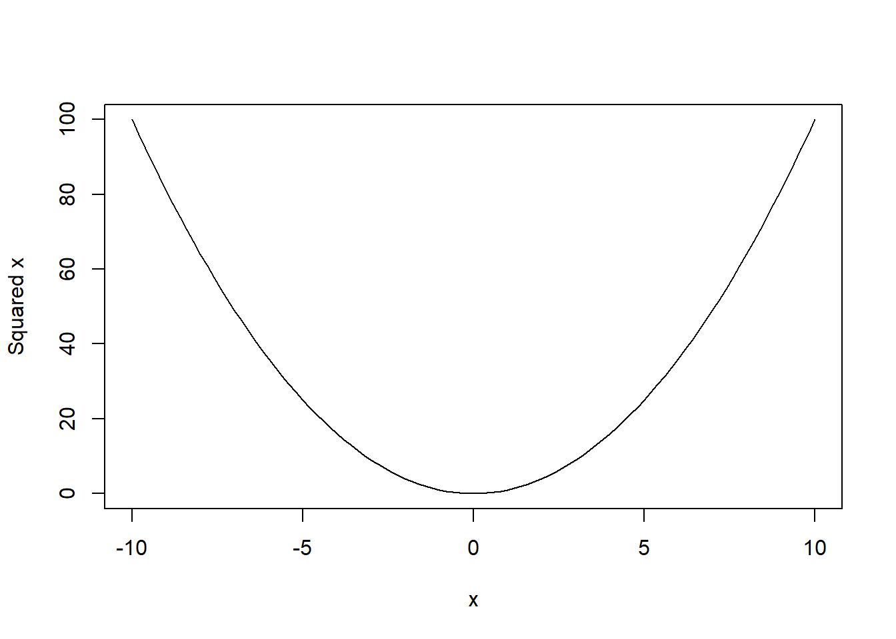

R basics
Show/hide code:
On every page, at the top, you’ll find a </> button. Click it to toggle the visibility of all R code on the page at once. Alternatively, you can click ‘Show the code’ within individual code chunks to view code on a case-by-case basis.
Start using R
To get started with R, follow these steps:
Download and Install R: Grab the newest version from the official R website. > Tip: Download from a Comprehensive R Archive Network (CRAN) server near your geographic location.
Download and Install RStudio: You can get it from this link. > Note: RStudio serves as an Integrated Development Environment (IDE) offering a user-friendly interface. It facilitates operations such as executing R commands, preserving scripts, inspecting results, managing data, and more.
Begin with RStudio: Once you open RStudio, delve into using R. For starters, employ the R syntax for script preservation, allowing future code adjustments and additions.
Basic syntax
R, a versatile programming language for statistics and data analysis, can execute numerous tasks. Let’s break down some of the fundamental aspects of R’s syntax.
- Using R as a Calculator
Similar to how you’d use a traditional calculator for basic arithmetic operations, R can perform these functions with ease. For instance:
This is a basic addition, resulting in 2.
A more intricate calculation:
This demonstrates R’s capability to handle complex arithmetic operations.
- Variable Assignment in R
R allows you to store values in variables, acting like labeled containers that can be recalled and manipulated later. For example,
Similarly:
- Creating New Variables Using Existing Ones
You can combine and manipulate previously assigned variables to create new ones.
You can also use multiple variables in a single expression:
- Creating Functions
Functions act as reusable blocks of code. Once defined, they can be called multiple times with different arguments. Here’s how to define a function that squares a number:
R also comes with a plethora of built-in functions. Examples include exp (exponential function) and rnorm (random number generation from a normal distribution).
- Utilizing Built-In Functions
For instance, using the exponential function:
The rnorm function can generate random samples from a normal distribution: below we are generating 10 random sampling from the normal distribution with mean 0 and standard deviation 1:
As random number generation relies on algorithms, results will differ with each execution.
However, by setting a seed, we can reproduce identical random results:
As we can see, when we set the same seed, we get exactly the same random number. This is very important for reproducing the same results. There are many other pre-exiting functions in R.
- Seeking Help in R
R’s help function, invoked with ?function_name, provides detailed documentation on functions, assisting users with unclear or forgotten arguments:
Below is an example of using the pre-exiting function for plotting a curve ranging from -10 to 10.

If some of the arguments are difficult to remember or what else could be done with that function, we could use the help function. For example, we can simply type help(curve) or ?curve to get help on the curve function:
If you’re uncertain about a function’s precise name, two question marks can assist in the search:
- Creating Vectors
Vectors are sequences of data elements of the same basic type. Here are some methods to create them:
Show the code
# Creating vectors in different ways
x3 <- c(1, 2, 3, 4, 5)
print(x3)
#> [1] 1 2 3 4 5
x4 <- 1:7
print(x4)
#> [1] 1 2 3 4 5 6 7
x5 <- seq(from = 0, to = 100, by = 10)
print(x5)
#> [1] 0 10 20 30 40 50 60 70 80 90 100
x6 <- seq(10, 30, length = 7)
x6
#> [1] 10.00000 13.33333 16.66667 20.00000 23.33333 26.66667 30.00000- Plotting in R
R provides numerous plotting capabilities. For instance, the plot function can create scatter plots and line graphs:
- Character Vectors Apart from numeric values, R also allows for character vectors. For example, we can create a
sexvariable coded as females, males and other.
To determine a variable’s type, use the mode function:
Package Management
Packages in R are collections of functions and datasets developed by the community. They enhance the capability of R by adding new functions for data analysis, visualization, data import, and more. Understanding how to install and load packages is essential for effective R programming.
- Installing Packages from CRAN
The CRAN is a major source of R packages. You can install them directly from within R using the install.packages() function.
- Loading a Package
After a package is installed, it must be loaded to use its functions. This is done with the library() function.
You only need to install a package once, but you’ll need to load it every time you start a new R session and want to use its functions.
- Updating Packages
R packages are frequently updated. To ensure you have the latest version of a package, use the update.packages() function.
- Listing Installed Packages
You can view all the installed packages on your R setup using the installed.packages() function.
- Removing a Package
If you no longer need a package, it can be removed using the remove.packages() function.
- Installing Packages from Other Sources
While CRAN is the primary source, sometimes you might need to install packages from GitHub or other repositories. The devtools package provides a function for this.
When you are working on a project, it’s a good practice to list and install required packages at the beginning of your R script.
Video content (optional)
For those who prefer a video walkthrough, feel free to watch the video below, which offers a description of an earlier version of the above content.